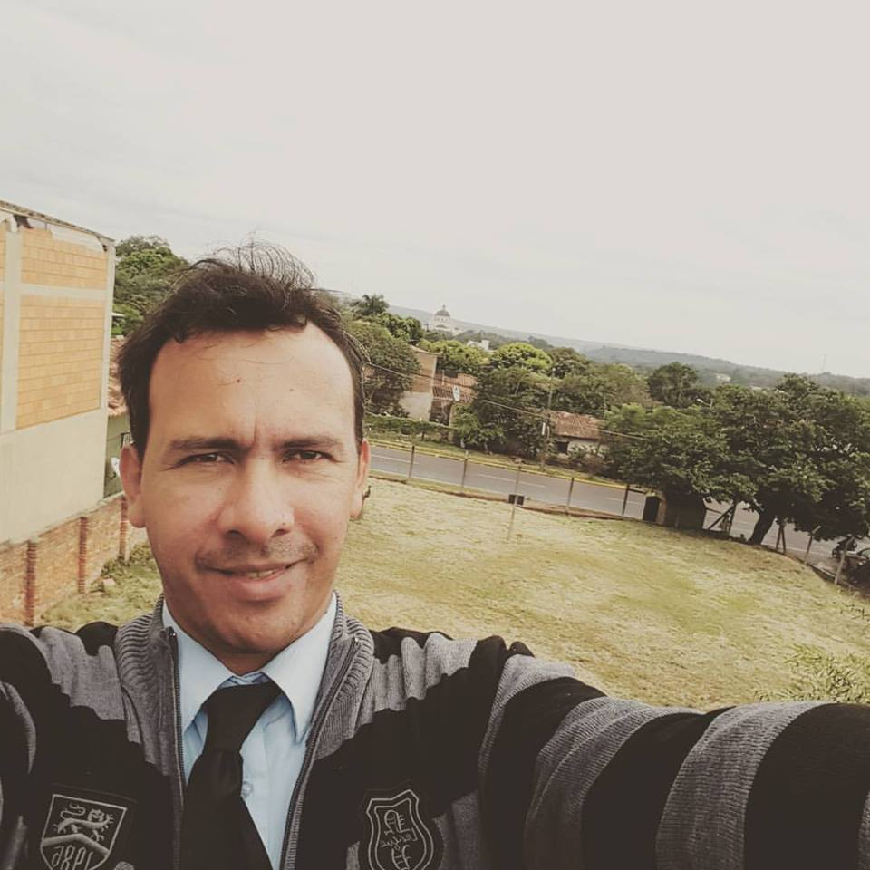

CV de Alcides Ojeda
Técnico Informático
desde el 2010 brinda servicios profesionales a empresas, dando soluciones de hardware, software y redes.
Education
- Técnico en Reparación de Pc`s
- Kolping Paraguay
- Idiomas
- Español, Giaraní, Portugués e Inglés.

Professional Experience
- Infoservis
- 2014. Implementación de redes de datos, instalación de CCTV, Mantenimiento y Reparación de Hardware TI.
- Servidor Público
- SEDERREC, SENADIS: desde 2013, ganador de consurso público de oposición, desarrollando actividades en el área de TI.
- Emprendimiento
- Servicios de Soluciones TI en la actualidad
Empresas
- Comercial San Vicente S. A.
- 2014
- Nuevo Super S. A.
- 2014
Other
- Programación Lenguaje Java.
- Programación Lenguaje Python.
- Programación Visual .Net.